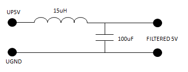
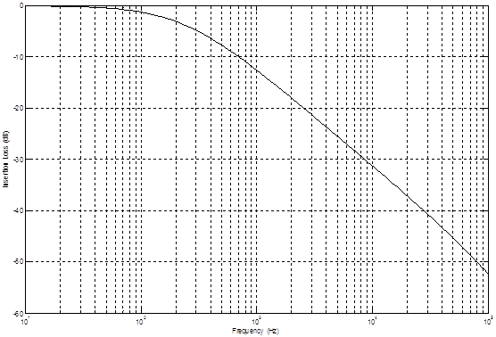
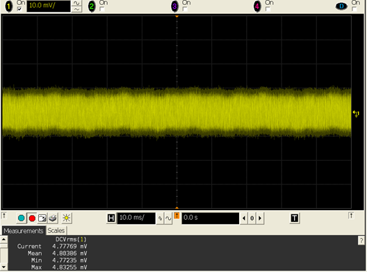
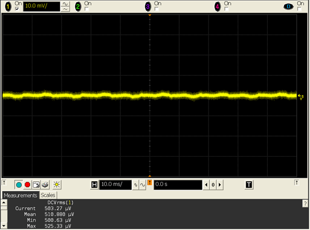
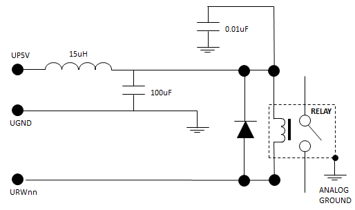

Reducing noise on utility lines
If you use the utility power supplies to supply power to noise-sensitive analog circuitry, a capacitor may be sufficient, for instance a ceramic capacitor of 100nF, to lower the noise level.
If more noise attenuation is required, you may use an LC-Filter on the utility power lines on the DUT board to prevent noise coupling into the analog signal path. This must be carefully designed to achieve the proper cut-off frequency and to avoid oscillations. Saturation current and heat rating current of the inductor must be greater than the maximum load current.
The figure below shows an example of a utility filter circuit.

The following graphic shows the filter frequency response based on a real implementation:

Suggested components for the filter are:
- A 15 uH inductor, Cooper Bussman UP2B-150-R
- A 100 uF capacitor, TDK C3216X5R1A107M160AC
The two graphics below show a comparison of the utility power supply noise without filter (top) and with filter (bottom) using a 10 ms time span on an AC-coupled oscilloscope.


If you mount a relay on the DUT board to switch the analog signal path, you should add a filter on the utility power line to ensure good quality of the analog signal. This is to prevent the relay from coupling noise from the utility power supply into the analog signal path.
The following figure shows an example circuit for controlling a relay using the above filter. The freewheel diode prevents reverse spikes generated by the relay appearing on the utility power lines.

Functional changes
- Introduced before SmarTest 6.3.2
- SmarTest 7.3.1: Rewritten and enhanced